![]()
Show me the R code
library(tidyverse)
library(knitr)
library(viridis)
library(Hmisc)
library(ggpubr)Welcome to this tutorial on data visualisation in R!
Throughout this tutorial, our aim is to provide you with the basic tools for visualising your data in R. After organizing some variables, computing new ones, and filtering data for statistical analyses, we are now left with plotting and visualising our data. The aim of this tutorial is to help you master this fundamental skill!
At the end of this tutorial, you will also learn how to map field site locations in R.
Let’s get started!
In this tutorial, we will import, tidy and transform vegetation data collected between April and May 2024 as part of the Ecological Field Research course at Utrecht University. Students went out into the field and collected vegetation data in four different habitats around Utrecht: a grassland, a forest, a heathland and a peatland. At each site, the students established 10 plots (4 m²) at two different locations and recorded the percent cover of each species in the plots. Some species, such as grasses, were recorded at functional group level.
When visualising data in R, you can of course use base R functions (e.g., plot, points, lines, etc.), but this tutorial is only going to focus on functions of the ggplot2 R package. This is because ggplot2 can produce high-quality figures very quickly, even for complex ecological datasets. With ggplot2, you can generate a wide variety of graphs, including scatter plots, bar charts, histograms, box plots and much more, while having control over layouts, labels and aesthetics, such as colours, sizes and shapes. ggplot2 relies on a coherent system for building graphs: the grammar of graphics. Using ggplot2 requires you to learn a new grammar, which may sound overwhelming at first, but is in fact easy to learn because it relies on a simple set of core principles.
This tutorial will only give you a very brief introduction to ggplot2. If you want to explore all the possibilities offered by ggplot2 for data scientists, we recommend going through Hadley Wickham’s reference book: ggplot2: Elegant Graphics for Data Analysis. To freely access the content of this book, just click on its cover.

In this tutorial, we will use ggplot2 to create the following graphs:
Posit, the open source data science company behind RStudio, developed some very useful cheat sheets to help you remember how to use some of the core tidyverse packages, including ggplot2. You can download the ggplot2 cheat sheet using this link.
The first step is to load all the R packages needed for this tutorial. Since ggplot2 is included in tidyverse, we just need to load the tidyverse library. We will also need a couple of other packages, including knitr, viridis, Hmisc, and ggpubr. Do not forget to install them if you do not have them in your library.
library(tidyverse)
library(knitr)
library(viridis)
library(Hmisc)
library(ggpubr)You can download the data manually (either from Brightspace or from GitHub), but you can also import the data directly from Github using an R function called read_csv(). Let’s give it a try.
#URL to access the data
url <- "https://raw.github.com/BenjaminDelory/GEO2-2439/master/Data/data_vegetation.csv"
#Import data in R
data <- read_csv(url)In RStudio, you can see how each data frame looks like using View().
View(data)You can see that the dataset consists of a number of observations (rows) of 7 variables (columns). These variables are:
Using the data described above, we will create a box plot showing how plant species richness differs between the two locations for each habitat type. Let’s proceed step by step.
First, we need to calculate the number of plant species present in each plot. For simplicity’s sake, you only need to calculate this information for the last observation date (2024-5-27). Don’t forget to delete the Deadwood, Bare_ground and Litter observations (use filter()). Use what you learned in the data wrangling tutorial to do this. Also, think about transforming the Location variable into a factor with two levels. Store the new dataset into a new R object called data_plot.
Can you manage to write this code on your own? Take the time you need to do this, but give it a try!
data_plot <- data |>
filter(Date == "2024-5-27") |> #Filter data based on date
filter(Species != "Deadwood") |>
filter(Species != "Bare_ground") |>
filter(Species != "Litter") |>
separate_wider_delim(
cols = "Site", #Split Site column
delim = "_",
names = c("Site_code", "Habitat"),
cols_remove = FALSE
) |>
group_by(Habitat, Location, Plot, Species) |> #Group data
summarise(Avg_cover = mean(Cover)) |> #Calculate average cover for each species in a plot
group_by(Habitat, Location, Plot) |> #Regroup data
summarise(Species_richness = length(Species)) |> #Calculate species richness in each plot
mutate(Location = as.factor(Location)) #Transform the location variable as a factorYou can start creating a plot using the function ggplot(). Later on, we will add new layers to this ggplot object. ggplot() has two main arguments: data and mapping. The data argument is used to specify the name of the dataset that should be used to create the graph. The mapping argument is used to specify how variables in your dataset are linked to visual properties (referred to aesthetics) of your plot. You should always use the aes() function for the mapping argument. The x and y arguments of aes() are used to choose the x (horizontal) and y (vertical) variables of your plot, respectively. The general syntax to create a ggplot object looks like this:
ggplot(data = your_data, mapping = aes(x, y, other aesthetics))
Let’s create our first ggplot using Location (either Location 1 or Location 2) and Species_richness (i.e., the number of plant species in a plot) as the x and y variables, respectively.
ggplot(data = data_plot, mapping = aes(x = Location, y = Species_richness))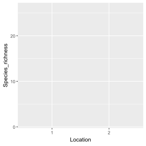
As you can see, the structure of the plot is there, but it does not display any data yet. This is because we have not specified in our code how our observations should be represented in our plot. You can do this by defining a geom. In ggplot2, there are a number of geom to choose from. Here are a few examples (but see ggplot2 cheat sheet for more examples):
geom_point(): This geom is used to display individual data points and create a scatter plot.
geom_jitter(): This geom is similar to geom_point() but jitters the data to improve readability.
geom_line() and geom_path(): These geom are used to add lines connecting observations in your graph. While geom_path() connects observations in the order in which they appear in the data, geom_line() connects observations in the order of the variable plotted on the x axis of your graph.
geom_boxplot(): This geom is used to create a box plot, which is particularly useful to display and compare the distribution of a response variable for different groups.
geom_bar(): This geom is used to create bar charts.
geom_abline(): This geom is used to add horizontal, vertical, and diagonal lines to your graph.
As we want to create a box plot, let’s use geom_boxplot(). In geom_boxplot(), use the width argument to make boxes more narrow (by default, width=1).
ggplot(data = data_plot, mapping = aes(x = Location, y = Species_richness)) +
geom_boxplot(width = 0.5)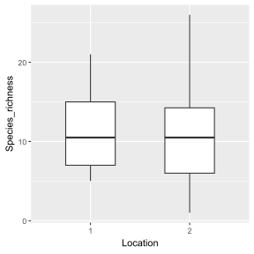
It’s starting to look like a graph! However, it still lacks one important piece of information: the habitat type (Habitat variable). The easiest way to add this information is to create a figure with several panels (i.e. one panel per habitat). To do this, you can use facet_wrap() or facet_grid().
facet_grid() forms a matrix of panels defined by row and column variables. It is particularly useful when you have two discrete variables and all variable combinations exist in the data.
facet_wrap() is generally used when you want to create figure panels based on a single discrete variable (which is the case in this example).
ggplot(data = data_plot, mapping = aes(x = Location, y = Species_richness)) +
geom_boxplot(width = 0.5) +
facet_wrap(~Habitat, nrow = 1)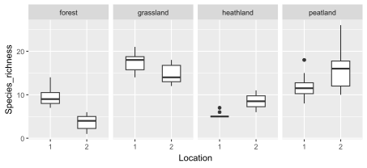
We can improve it even further by plotting the raw data on top of the box plot. You can do this using geom_point() or geom_jitter(). In geom_jitter(), use the width argument to adjust the horizontal spread of the data points. Set also height=0 to make sure that data points are only jittered horizontally. We will also use the shape argument to choose the symbol we want to use to represent each data point. There a number of options to choose from:
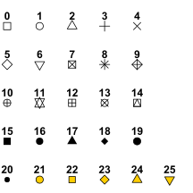
ggplot(data = data_plot, mapping = aes(x = Location, y = Species_richness)) +
geom_boxplot(width = 0.5) +
facet_wrap(~Habitat, nrow = 1) +
geom_jitter(width = 0.1, height = 0, shape = 1)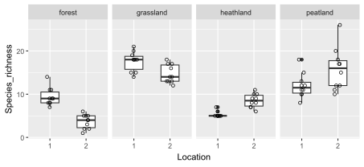
Note that the order in which you specify the different geom matters! If geom_jitter() is used before geom_boxplot(), most of the individual data points will be hidden behind the box plots.
ggplot(data = data_plot, mapping = aes(x = Location, y = Species_richness)) +
facet_wrap(~Habitat, nrow = 1) +
geom_jitter(width = 0.1, height = 0, shape = 1) +
geom_boxplot(width = 0.5)
In this section, we are going to personalise our plot by adding new layers and aesthetics.
The first thing we would like to do is to fill boxes with a specific colour for each Location. To achieve this, we will have to provide additional information in aes(). We need to introduce two new arguments: colour (or colour) and fill. As we want the two Location categories to be displayed with a different colour, we can use fill=Location inside aes().
ggplot(
data = data_plot,
mapping = aes(x = Location, y = Species_richness, fill = Location)
) +
geom_boxplot(width = 0.5) +
facet_wrap(~Habitat, nrow = 1) +
geom_jitter(width = 0.1, height = 0, shape = 1)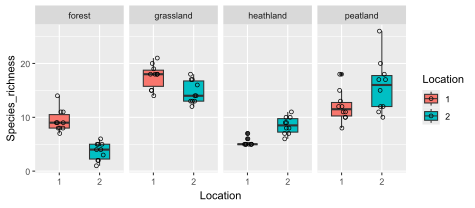
What would happen if you use colour=Location instead of fill=Location? What do you notice? Change the code and give it a try!
By default, when assigning a specific colour to each group, ggplot2 uses colours that are evenly spaced around a HCL (Hue Chroma Luminance) colour circle. However, this is not necessarily the best choice, especially for colour-blind people. The colour palettes provided by viridis() in the viridis R package have been specially designed to produce graphics that are pleasing to the eye, easier to read for colour-blind people and print well in greyscale. As shown in the figure below, eight colour palettes are available in viridis: magma (option A), inferno (option B), plasma (option C), viridis (option D, this is the default), cividis (option E), rocket (option F), mako (option G), and turbo (option H).

Let’s keep on personalising our plot by specifying that we want to use the viridis (option D) colour palette to create the figure. This can be done with scale_colour_viridis() (scale_colour_viridis() would work too) or scale_fill_viridis(). These functions have a couple of arguments to play with, including alpha (used to make colours more or less transparent), direction (to change the order of the colours in the scale), discrete (set to TRUE if you want to assign colours to a discrete scale such as groups), and option (to choose the colour palette you want to use). A list of colours available in R can also be found here.
ggplot(
data = data_plot,
mapping = aes(x = Location, y = Species_richness, fill = Location)
) +
geom_boxplot(width = 0.5) +
facet_wrap(~Habitat, nrow = 1) +
geom_jitter(width = 0.1, height = 0, shape = 1) +
scale_fill_viridis(discrete = TRUE, option = "D", alpha = 0.5)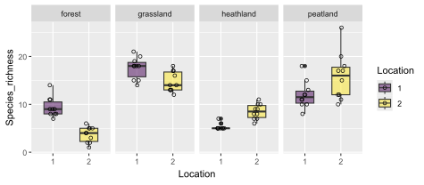
Now that we are happy with the colours used in our plot, we can keep on personalising the layout by adding new layers to our ggplot. Let’s do the following:
xlab() and ylab().theme_grey() is used (this is the reason why our plot has a grey background). Other popular themes are theme_bw() (black and white theme), theme_minimal() (minimalistic theme), and theme_classic() (a classic theme with axis lines but no gridlines). Many more themes are available in ggplot2. We will use theme_bw() to personalise our plot.geom_boxplot(). As individual data points are also displayed, this information is redundant. We can get rid of these points using outliers = FALSE in geom_boxplot().theme() and setting legend.position="none". theme() is a particularly important function as it allows you to personalise many aspects of your plot, such as the colour, size and orientation of the text along plot axes.scale_y_continuous().theme() and element_text().theme(), using the margin argument in element_text().theme(), using panel.grid.minor = element_blank().ggplot(
data = data_plot,
mapping = aes(x = Location, y = Species_richness, fill = Location)
) +
geom_boxplot(width = 0.5, outliers = FALSE) +
facet_wrap(~Habitat, nrow = 1) +
geom_jitter(width = 0.1, height = 0, shape = 1) +
scale_fill_viridis(discrete = TRUE, option = "D", alpha = 0.5) +
theme_bw() +
xlab("Site locations") +
ylab("Plant species richness") +
scale_y_continuous(breaks = seq(from = 0, to = 25, by = 5)) +
theme(
legend.position = "none",
axis.text = element_text(colour = "black"),
axis.title.x = element_text(margin = margin(t = 10)), #t means top
axis.title.y = element_text(margin = margin(r = 10)),
panel.grid.minor = element_blank()
) #r means right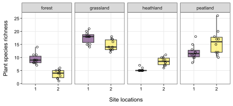
When comparing groups to each other, we are often interested in comparing group means and their confidence limits (often represented as 95% confidence intervals). The function stat_summary() allows you to add this information to your ggplot. In stat_summary(), fun.data = "mean_cl_boot" can be used to calculate and display the average value and 95% confidence interval estimated by bootstrapping (which is a convenient way to estimate confidence intervals without assuming that the underlying data are normally distributed).
To improve readability, we want to plot these summary statistics on the right side of each box plot, using the same colour palette (tip: add aes() in stat_summary()). In stat_summary(), the position argument allows you to fine tune the position of plotted elements. The function position_nudge() allows you to shift the position of items along the vertical and horizontal axes by a small amount. In our case, shifting the position of summary statistics by 0.4 units to the right seems like a good idea.
ggplot(
data = data_plot,
mapping = aes(x = Location, y = Species_richness, fill = Location)
) +
geom_boxplot(width = 0.5, outliers = FALSE) +
facet_wrap(~Habitat, nrow = 1) +
geom_jitter(width = 0.1, height = 0, shape = 1) +
stat_summary(
fun.data = "mean_cl_boot",
aes(colour = Location),
position = position_nudge(x = 0.4)
) +
scale_fill_viridis(discrete = TRUE, option = "D", alpha = 0.5) +
scale_colour_viridis(discrete = TRUE, option = "D") +
theme_bw() +
xlab("Site locations") +
ylab("Plant species richness") +
scale_y_continuous(breaks = seq(from = 0, to = 25, by = 5)) +
theme(
legend.position = "none",
axis.text = element_text(colour = "black"),
axis.title.x = element_text(margin = margin(t = 10)), #t means top
axis.title.y = element_text(margin = margin(r = 10)),
panel.grid.minor = element_blank()
) #r means right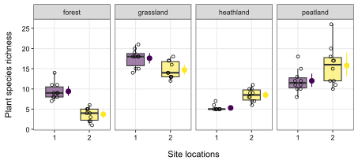
Remember the pipe? We introduced it in the data wrangling tutorial. How can we rewrite the code used to produce our figure using the pipe? Give it a try!
data_plot |>
ggplot(mapping = aes(x = Location, y = Species_richness, fill = Location)) +
geom_boxplot(width = 0.5, outliers = FALSE) +
facet_wrap(~Habitat, nrow = 1) +
geom_jitter(width = 0.1, height = 0, shape = 1) +
stat_summary(
fun.data = "mean_cl_boot",
aes(colour = Location),
position = position_nudge(x = 0.4)
) +
scale_fill_viridis(discrete = TRUE, option = "D", alpha = 0.5) +
scale_colour_viridis(discrete = TRUE, option = "D") +
theme_bw() +
xlab("Site locations") +
ylab("Plant species richness") +
scale_y_continuous(breaks = seq(from = 0, to = 25, by = 5)) +
theme(
legend.position = "none",
axis.text = element_text(colour = "black"),
axis.title.x = element_text(margin = margin(t = 10)), #t means top
axis.title.y = element_text(margin = margin(r = 10)),
panel.grid.minor = element_blank()
) #r means rightOften, we produce multiple plots that we want to put together into one figure as separate panels. But how can we easily do this? The answer is: by using ggarrange() in the ggpubr R package. It is easier to use ggarrange() if each individual plot is stored in a different object. Let’s do this by combining two times the same plot (you would not normally do this, but it works well as an example of using ggarrange()).
Use ggarrange() to create one figure with two panels (2 rows, 1 column). In ggarrange(), important arguments are nrow (number of rows in the plot grid), ncol (number of columns in the plot grid), align (adjust horizontal and vertical alignment), labels (set or auto-generate labels for figure panels), and common.legend (set to TRUE if you want to create a common unique legend).
#Create plot and store it into an object
p <- data_plot |>
ggplot(mapping = aes(x = Location, y = Species_richness, fill = Location)) +
geom_boxplot(width = 0.5, outliers = FALSE) +
facet_wrap(~Habitat, nrow = 1) +
geom_jitter(width = 0.1, height = 0, shape = 1) +
stat_summary(
fun.data = "mean_cl_boot",
aes(colour = Location),
position = position_nudge(x = 0.4)
) +
scale_fill_viridis(discrete = TRUE, option = "D", alpha = 0.5) +
scale_colour_viridis(discrete = TRUE, option = "D") +
theme_bw() +
xlab("Site locations") +
ylab("Plant species richness") +
scale_y_continuous(breaks = seq(from = 0, to = 25, by = 5)) +
theme(
legend.position = "none",
axis.text = element_text(colour = "black"),
axis.title.x = element_text(margin = margin(t = 10)), #t means top
axis.title.y = element_text(margin = margin(r = 10)),
panel.grid.minor = element_blank()
) #r means right
#Combine plots with ggarrange()
(plot_final <- ggarrange(
p, #This is the first panel
p, #This is the second panel
nrow = 2,
ncol = 1,
align = "hv", #Panels need to be horizontally and vertically aligned
labels = "auto"
)) #Auto-generate lower-case labels for each subplot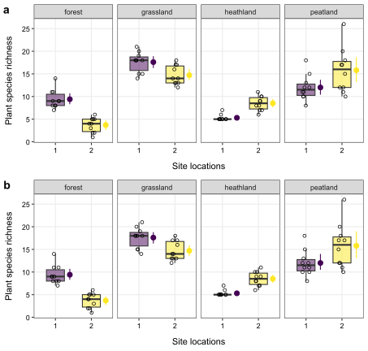
Once you are happy with your figure, you can export it as a high-resolution image file (png, tiff, jpg, etc.) for your paper or presentation using ggsave(). In ggsave(), important arguments are filename (the name of the image file, with file extension), plot (the name of your ggplot object), dpi (desired image resolution in dots per inch), width (image width), height (image height), and units (the units used for width and height). By default, the figure will be saved in your working directory (see getwd()).
ggsave(
filename = "Boxplot_vegetation.png",
plot = p,
dpi = 1000,
width = 16,
height = 7.5,
units = "cm"
)The second exercise of this tutorial is to use vegetation and microclimate data to create a scatter plot displaying the relationship between plant species richness (independent variable) and air temperature measured 2 cm above the soil surface (dependent variable). Let’s have a look at how to do this with ggplot2.
Air and soil temperature were measured every minute using TMS-4 data loggers. Data were collected in April-May 2024 at four different research sites (grassland, forest, heathland, peatland). At each site, two locations (1 or 2) were chosen for microclimate monitoring.
In an ideal world, we would have collected independent microclimate data from each plot by installing one (or more) data loggers per plot. Unfortunately, we don’t have enough data loggers for this course and the best we can do is install two data loggers per research site. We’ll have to make do with that for this tutorial.
You can download the microclimate data from GitHub using the following code (you can also download the csv file from Brightspace):
#URL to access the data
url <- "https://raw.github.com/BenjaminDelory/GEO2-2439/master/Data/data_microclimate.csv"
#Import data in R
data_microclimate <- read_csv(url)You can see how the data frame looks like using View().
View(data_microclimate)You can see that the dataset consists of a many observations (318928 rows) of 7 variables (columns). These variables are:
Before merging the vegetation and microclimate data into a single dataset that we can use to make a figure, we first need to organise the microclimate data. The difficulty lies in the fact that the temperature values were measured at the site level every minute for a bit less than a month, and we don’t need such a detailed level of information for our figure. What we want is an air temperature value (measured 2 cm above ground) for each location at each observation date. The easiest way to do this is to group data per date, site and location and calculate the average temperature value (at 2 cm above ground level) for each combination of date, site and location.
Since we need to use and match the information contained in the vegetation and microclimate datasets, we need to write them in the same format. One way of doing this is to add a new column (Date) to the microclimate data, using the information stored in the existing Time_UTC column. The functions add_column(), str_sub() and str_replace_all() will be particularly useful here.
#Add new date column
data_microclimate <- data_microclimate |>
add_column(
Date = str_sub(data_microclimate$Time_UTC, start = 1, end = 10),
.after = "Time_UTC"
)
#Change month format to match vegetation data
data_microclimate$Date <- str_replace_all(
data_microclimate$Date,
pattern = "-0",
replacement = "-"
)Now we are ready to summarise our data! The next step is to write R code to calculate the average air temperature (2 cm above ground) for each combination of date, site and location.
data_microclimate <- data_microclimate |>
group_by(Date, Site, Location) |>
summarise(Avg_T2 = mean(T2))So we end up with a much simpler microclimatic dataset, containing just 232 temperature values (one for each combination of date, site and location).
Now let’s use this data to plot the relationship between plant species richness (variable x) and air temperature (variable y), and see how this relationship evolves as a function of observation date.
Before we start working on our figure, we need to merge the vegetation and temperature data into a single dataset. This can be done using left_join() or right_join().
The left_join() and right_join() functions are used to combine two datasets based on shared key columns. A left_join() keeps all rows from the left dataset and adds matching rows from the right dataset, while a right_join() does the opposite (keeping all rows from the right dataset). The by argument is essential because it specifies the key column(s) used to match rows between the two datasets. Without correctly setting the by argument, R may not align the data as intended, potentially leading to incorrect or missing results in the joined output.
To combine vegetation and temperature data, we will add the temperature data to our vegetation data. We will use the information contained in the Date, Site and Location columns to match the data. To do this, you can use the code below. Note that the first part of the code is very similar to the one we used to calculate plant species richness above. The only difference is that we have split the information contained in the Site column (into Site_code and Habitat) after merging the two datasets (it is just easier that way).
data_plot <- data |>
filter(Species != "Deadwood") |>
filter(Species != "Bare_ground") |>
filter(Species != "Litter") |>
group_by(Date, Site, Location, Plot, Species) |> #Group data
summarise(Avg_cover = mean(Cover)) |> #Calculate average cover for each species in a plot (at a specific date)
group_by(Date, Site, Location, Plot) |> #Regroup data
summarise(Species_richness = length(Species)) |> #Calculate species richness in each plot (at a specific date)
left_join(
data_microclimate, #Add temperature data
by = c("Date", "Site", "Location")
) |>
separate_wider_delim(
cols = "Site", #Split Site column
delim = "_",
names = c("Site_code", "Habitat"),
cols_remove = FALSE
) |>
mutate(Location = as.factor(Location)) #Transform Location variable as a factorConsidering that microclimate data have been measured at the site level, but that species richness data have been obtained at the plot level, one imperfect approach we can use in this tutorial is to calculate the average species richness and temperature values at each location and at each date. We can do this easily using group_by() and summarise().
data_plot <- data_plot |>
group_by(Date, Habitat, Location) |>
summarise(Species_richness = mean(Species_richness), Avg_T2 = mean(Avg_T2))We are now ready to plot our data!
First, create a simple figure displaying individual data points and clear axis titles (keep on using the pipe).
data_plot |>
ggplot(aes(x = Species_richness, y = Avg_T2)) +
geom_point(shape = 16, colour = "black") +
theme_bw() +
xlab("Plant species richness") +
ylab("Air temperature (°C)") +
theme(
axis.title.x = element_text(margin = margin(t = 10)), #t means top
axis.title.y = element_text(margin = margin(r = 10))
) #r means right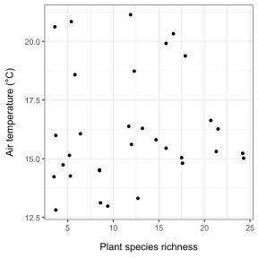
It is already a nice graph, but now we want to make it more informative by making the date information visible. There are several ways of doing this. The first is to display the data points with a different shape (use shape in aes()) or a different colour (use colour or colour in aes()). Let’s use different colours for now! Feel free to play around with different shapes (scale_shape_manual()) and colour palettes. In the previous example, we used scale_colour_viridis() to choose our viridis colour palette. We can use it again here.
We will also increase the size of the points using the size aesthetics.
Give it a try!
data_plot |>
ggplot(aes(x = Species_richness, y = Avg_T2, colour = Date)) +
geom_point(shape = 16, size = 2) +
theme_bw() +
xlab("Plant species richness") +
ylab("Air temperature (°C)") +
theme(
axis.title.x = element_text(margin = margin(t = 10)), #t means top
axis.title.y = element_text(margin = margin(r = 10))
) + #r means right
scale_colour_viridis(discrete = TRUE, option = "D")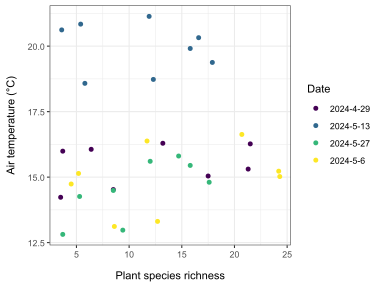
We are getting closer to the final version of our graph, but there are still a few points to be ironed out.
We would like to add a trend line (“smoother”) to better visualise the shape of the relationship between our two continuous variables. This can be done using a new geom: geom_smooth(). The geom_smooth() function lets you fit and plot different types of trend lines to your data (simple linear model, LOESS, generalised linear model, etc.). Here, we will ask ggplot2 to fit and plot a simple linear model (using the lm() function) for each observation date. You can do this using the method argument. Since we have plotted the observations using a different colour for each observation date, geom_smooth() will automatically draw a separate trend line for each one.
data_plot |>
ggplot(aes(x = Species_richness, y = Avg_T2, colour = Date)) +
geom_smooth(method = "lm", fill = "lightgrey") +
geom_point(shape = 16, size = 3) +
theme_bw() +
xlab("Plant species richness") +
ylab("Air temperature (°C)") +
theme(
axis.title.x = element_text(margin = margin(t = 10)), #t means top
axis.title.y = element_text(margin = margin(r = 10))
) + #r means right
scale_colour_viridis(discrete = TRUE, option = "D")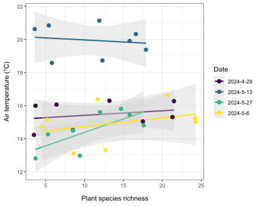
How would you modify the code above to fit and plot a simple linear model to visualise the relationship between plant species richness and air temperature across all observation dates?
Tip: see the geom_smooth() help page for other arguments to use for this purpose.
Before exporting our graph as a high-resolution image file, we would like to do two things:
theme() function, you can use the axis.text argument to do this.theme() function, you can use the panel.grid argument to perform this operation.That’s what we need to do!
data_plot |>
ggplot(aes(x = Species_richness, y = Avg_T2, colour = Date)) +
geom_smooth(method = "lm", fill = "lightgrey") +
geom_point(shape = 16, size = 3) +
theme_bw() +
xlab("Plant species richness") +
ylab("Air temperature (°C)") +
theme(
axis.title.x = element_text(margin = margin(t = 10)), #t means top
axis.title.y = element_text(margin = margin(r = 10)), #r means right
panel.grid = element_blank(),
axis.text = element_text(colour = "black")
) +
scale_colour_viridis(discrete = TRUE, option = "D")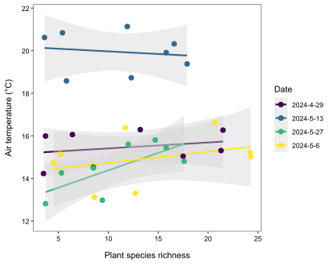
Use ggsave() to export your plot as a high-resolution image.
plot_final <- data_plot |>
ggplot(aes(x = Species_richness, y = Avg_T2, colour = Date)) +
geom_smooth(method = "lm", fill = "lightgrey") +
geom_point(shape = 16, size = 3) +
theme_bw() +
xlab("Plant species richness") +
ylab("Air temperature (°C)") +
theme(
axis.title.x = element_text(margin = margin(t = 10)), #t means top
axis.title.y = element_text(margin = margin(r = 10)), #r means right
panel.grid = element_blank(),
axis.text = element_text(colour = "black")
) +
scale_colour_viridis(discrete = TRUE, option = "D")
#Export high resolution figure
ggsave(
filename = "Scatterplot_sprichness_temperature.png",
plot = plot_final,
dpi = 1000,
width = 15,
height = 12,
units = "cm"
)Good data visualisation is essential for data exploration and analysis, as well as for presenting and publishing the results of your research. The aim of this tutorial was to give you a brief overview of the main functions available in ggplot2 for producing high-quality, clear and informative graphs. Of course, this tutorial is far from exhaustive and many other tools are available. We encourage you to continue learning and discovering new functions available in ggplot2 by using the popular books R for Data Science and ggplot2: Elegant Graphics for Data Analysis.